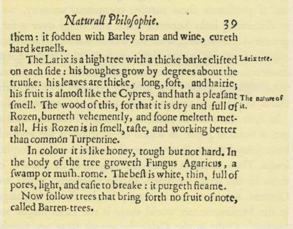

Our inquiries into the toadstool world are mostly confined to Europe and the
Indo-European fungal vocabulary, including the diffusion of the European words
across Siberia. We have brought in the Eskimos, the Maoris, and the Tanala
people of Madagascar; and we have traveled in Middle America. But the extent
to which toads and fungi are associated with each other in the minds of other
branches of the human family remains unanswered, and offers endless perspec-
tives for research. We leave most of those inviting prospects for others to explore.
(If this announcement inspires in the reader heartfelt Hosannas, let him imagine
how much greater is our relief!) For those who take up the pursuit, we here
submit two tantalizing items of information, plus a note on Chinese mycophagy.
1 he Japanese people are mighty mycophiles, possessing a large mushroom
vocabulary and an especially warm affection for several edible species. In the
hierarchy of esteem, they place first the matsutake, a gilled species that grows in
red-pine woods, related to the genus armillariella, and famous for its inviting aro-
ma. The matsutake of the Kyoto woods are the most highly prized, and in the fall
of the year picnics are organized to hunt them. Old records speak of matsutake
as far back as the I3th century; before then a species known as the hiratake ap-
pears to have occupied the premier position among the Japanese. The shiitake
is a related species that grows on the trunks of certain trees, and that is cultivated
in large quantities on trunks cut down for that purpose. Both the matsutake and
the shiitake are species peculiar to Japan and perhaps Korea. The collybia velu-
tipes, gathered young and small, is a favorite in soup; it bears many names, of
which nameko is the commonest. An important role is also played by the rhizo-
pogon rubescens, known as the shoro. But the species that is of immediate interest
for our purpose is the inedible shelf-mushroom known normally in Japanese as
the saru no koshikake, the 'monkey's stool'. We have discovered that in certain
villages of Chiba prefecture, across the bay from Tokyo, the peasants call this
fungus the gama no koshikake, or toad's stool; notably in three northern gun or
townships of the prefecture, by name Imba, Katori, and Sousa. Gama is the name
for 'toad' in the Kanto dialect of Japanese, spoken in Tokyo and thereabouts.
On pushing our inquiries, we discovered that gama no koshikake was an alter-
native expression for kama no koshikake, which would mean the stool of the
household furnace god o-kama-sama, and the longer expression and more old-
fashioned would be o-kama-sama no koshikake. Toads are associated in the pea-
330
'GAMA NO KOSHIKAKE' AND 'HEGBA MBODDO'
sants' minds with the big stove that occupies an unfloored part of their houses,
and there may be a genetic relationship, or at least a semantic association, between
the word for toad in the Kanto dialect and the names of the furnace god. The
peasants regard the toad with no repugnance; its presence is even considered
auspicious in some regions.1
Thus in Japan we have irrefutable evidence of an association between toads
and fungi of indigenous inspiration, and for us the astonishing feature is that
this association is tied to fire and a fire divinity.
.r rofessor Roger Heim described in his Revue de Mycologie in February 1936
three giant boleti of Madagascar and tropical Africa. One of these bears the
scientific name of boletus (Xerocomus) sudanicus Har. et Pat., and is native to
Central Africa. In the course of Professor Heim's article there appears a foot-
note wherein the reader is told that in the region known as the Chari the
native name for this edible and highly esteemed boletus is hegba mboddo, and
that this means literally 'toad's stool'. The Chari is an important river running
north and west through French Equatorial Africa, emptying into Lake Chad.
For our inquiries Professor Heim's report was of the highest interest. Was it
conceivable that a people in the heart of Africa used the same fungal metaphor
as the peoples in the North Sea basin ? In the cultural crazy quilt of darkest
Africa could we discover the race for whom hegba mboddo was a fungal designa-
tion? Our explorations (by correspondence) covered the Sara and certain other
Sudanese languages, and also five of the languages of the Sudan central tribes :
Kara, Banu, Gbe, Kaba, and Sango. In every case the results were negative, as
they were at first among the Bantu peoples. At this point we consulted Professor
Archie N. Tucker, of the School of Oriental and African Studies at the Uni-
versity of London, and he knew the answer at once: hegba mboddo is a term
used by the little known people of Bongoland, described by the German ex-
plorer Georg Schweinfurth following his visit to the Bongo country in the
i86o's. His book appeared in English in 1874 as The Heart of Africa, and he is
the authority for the use of the term that interests us. In Schweinfurth's time
no white men had previously visited the Bongo people and observed them,
and there can be no possibility of European influence. The Bongo live in the
very heart of Africa, in two enclaves, north of the 7° parallel North and to the
westward of the 29° East longitude. They are a farming folk. Here is what
Schweinfurth had to say about the mycophilia of the Bongo people:
I. We are indebted for our information to Professor Kunio Yanagita, the eminent Japanese authority on folk-
lore and dialects, to Mrs. Chiyo Omachi who assembled and interpreted in English the evidence, and to Pro-
fessor Toyohiko Kawabata of Chiba University for verifying the usage in the various gun of his prefecture.
During the rainy season the country is prolific in many kinds of funguses. The Bongo
have a great fancy for them; they keep them until they are on the verge of decay, and
then dry and pound them. They use them for the purpose of flavouring their sauces,
which in consequence are enriched by a hautgout, which without depreciation may perhaps
be compared to rotten fish. Throughout the country I never saw any funguses but what
were perfectly edible, and some of them I must confess [sic] were perfectly palatable. The
natives call them all 'kahoo', while to the larger species they give the special name of
'hegba-mboddoh', which is synonymous with the Low German 'poggen staul', or with
the English 'toadstool'. 'Hegba' is the name which the Bongo give to their little carved
stools, and 'mboddoh' is the generic term for all frogs and toads, and the proper name
for the bufo pandarinus in particular. This 'hegba mboddoh' which has thus suggested the
same idea in very remote parts of the world, is here a gigantic polyporus; not infre-
quently specimens may be found of it which grow to a height of nine inches, and a foot
in diameter and weigh nearly fifty pounds. In form, size, and color they are not unlike
the grey clay edifices of the Termes mordax . . . The funguses which are the most com-
mon, and which are moreover the most preferred, are the different species of coprinus,
marasmius, rhodoporus, and the tough but aromatic lentinus.
The Bongo have been neglected by anthropologists: Schweinfurth is still the
principal authority on them. His testimony about the hegba tnboddo is certainly
trustworthy, but it should be verified and amplified. The giant fungus is eaten
by the Bongo: for them the association with the toad is not an epithet of
mycophobic rejection. Who will discover for us the full meaning of the toad in
the culture of the natives of Bongoland? Must we go there ourselves to arrive
at the answer? The language of the Bongo is one of a large group including
Sara (of which Kaba is a member), Kenga, and Bagirmi.
The discovery of the 'toadstool' in Bongoland is sensational for us with our
peculiar interest, but this is not the end. Professor Tucker happened to lay
our question before Mr. Jalo Gombe, an African in London at the time our
letter reached him. He belongs to the Fulani people, in Nigeria, far to the west
of the Bongo and separated from them by many African peoples. He is a teacher
in the senior high school at Gombe, a community that one reaches by way of
Jos. 'Fulani' is the name of this people in the Hausa language. The French call
them 'Peul'; in their own language one Fulani is 'Pullo', more than one 'Fulbe',
and they call their tongue 'Fulfulde'. It is essential to set forth these various
words, as they are all in current use and can cause confusion. Mr. Gombe in a
long and informative letter apprises us that in his native language the general
word for all wild mushrooms is kow.wal pa:bi. (The colon indicates a long
vowel; the b in this word, like the dd in hegba tnboddo, is what linguists call
'implosive' or 'ingressive'.) Koro:wal means 'stool' and pa:bi is the word for
frogs and toads. Mr. Gombe further informs us that wild mushrooms are not
332
'GAMA NO KOSHIKAKE' AND 'HEGBA MBODDO'
eaten by the Fulani, nor do they eat frogs or toads though certain neighboring
tribes do so. The Fulani consider toads unclean and some, especially among the
women, fear them. Toads are used in folk medicine. There is a disease of the
forehead called in Hausa 'monkey's forehead' (goshin Inn); to treat it the Fulani
rub the forehead with the belly of a living toad, and it is said that the patient
then recovers and the toad, thrown away, dies. The skin of the toad is used as a
charm and when "placed somehow may cause someone impotency". A certain
toadstool mixed with a certain tree fungus and soaked in water is used in treat-
ing venereal disorders.
Our African inquiries led us to a third discovery. In Uganda the principal
province is Buganda (of which 'Uganda' appears to be a corruption), and the
principal native clan in that province is known as the Baganda, whose language,
called Luganda, belongs to the immense Bantu family. All of the clans of
Buganda are valiantly mycophagous, according to our gifted native informant,
M. B. Nsimbi, of Kampala. The Baganda are known as the 'mushroom clan',
for they have as their totem two kinds of mushrooms, known in Luganda as the
bubaala and the namulondo. By the native gastronomes of Buganda the bubaala
are the most highly prized of all mushrooms, but the Baganda must deny
themselves these delights, for they may not eat their own totems. For us the
interesting feature of the fungal vocabulary of the Baganda is the presence of the
toad. There is a mushroom known in Luganda as the ngngoma-ya-kikere, which
means 'drum-of-toad', and which no one eats. In shape it suggests the native
drum, which in Africa is traditionally a symbol of authority, analogous to the
parasol in India.
In conclusion, then, we discover in the interior of Africa two peoples, both
of them remote from each other geographically, linguistically, and culturally,
who possess indigenous terms for mushrooms that are semantically identical
to the 'toadstool' of the North Sea basin. One of these peoples, the Bongo, ap-
pear to be mycophiles, and the other, the Fulani, are mycophobes. In addition, we
discover a third people, who associate a drum-shaped mushroom with the toad.
Among Africans both the drum and the stool sometimes symbolize authority.
Up to this point in our book we have only touched on China and the cult
of the mushroom in the Chinese cuisine. The subject is vast and the sources of
information are inaccessible. We shall do no more than offer two samples of
Chinese lore that have happened to come to our attention.
There is the problem of mo-gu. This is the colloquial name in northern China
of the clavaria pistillaris, one of the mushrooms most highly esteemed by
333


Chinese epicures. In the Mongolian language we discover a general word for
mushrooms, rndgti, and the Chinese word may have been imported with the
clavaria pistillaris from Mongolia. Is it possible that the Mongolian word was a
borrowing from Indo-European, being in short another member of our sponge
cluster of fungal words descended from the same root as σπόγγος? The phonetic
evolution in Mongolian is not impossible. An initial 'p', passing through 'b',
would become 'm'. The alternation between 'b' and 'm' in Mongolian is well
attested, e.g., becin and mecin, meaning monkey. There is also precedent in
Mongolian for dropping an internal nasal in borrowed words.
In the fungal hierarchy of the Chinese cuisine the highest rating belongs to
the Monkey Head Mushroom, concerning which Mr. K. C. Wu, the former
governor of Formosa, has given us curious information. This is a rare mushroom,
sells at a high price, and never passes through the vulgar marketplaces. Its
parfum is of exquisite delicacy, and it transforms any dish that it flavors. So
precious is it that only the best cooks are entrusted with it. The Monkey Head
Mushroom is represented in Chinese characters thus:
It is found only in the high mountains of Central China, and the best come from
the sacred range of Sung Mountains :
sung shan
sung mountain
They grow out of the trunks of trees, and are of the size of small monkey
heads, with yellow hair, two dots for eyes, and curves that are singularly sug-
gestive of a nose and mouth. We are told that where one grows another is
always to be found, and they are considered mates, male and female. When
you find one, you follow the direction of its eyes, and there on another
tree is the other one. They gaze on each other in a perpetual trance. Who is the
mycologist that will identify for us the Monkey Head Mushroom?